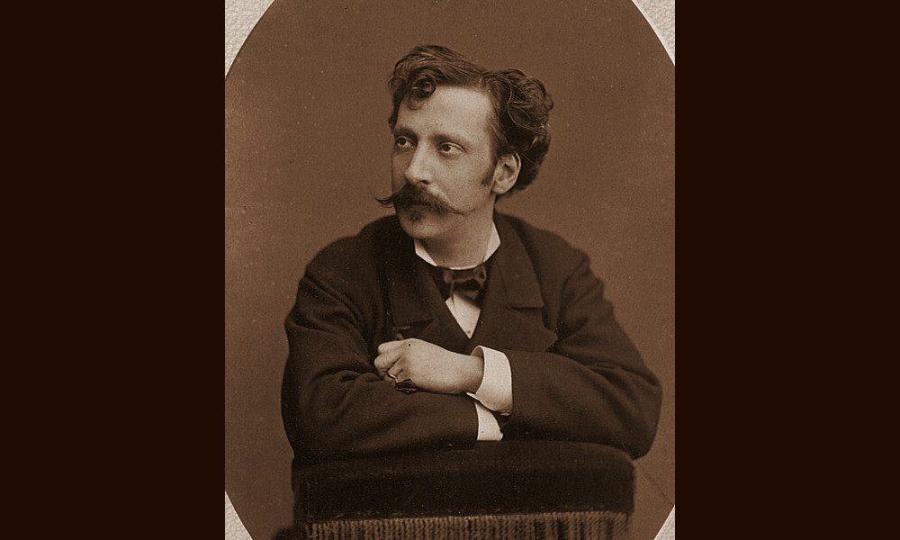

Guggenheim
Venezia, entità attiva dal 1869 al 1916

- PERSONE
- Moisè Michelangelo Guggenheim, 1837–1914, antiquario
Giorgio Guggenheim, 1877–1953, antiquario
Gabriella Guggenheim Luzzatti, 1879–1972, antiquario - INSEGNE
- Gabinetto di oggetti di antichità e di belle arti
M. Guggenheim. Objets d’Art & Antiquités - SEDI
- Campo Santa Maria del Giglio 2467, Venezia · 1869–1916
Calle dei Fusei, Venezia · 1869 ca.–1874
Calle del Remer 3901, Venezia · 1887–1914 - IN CATALOGO
- Opere transitate, catalogo della Fondazione Zeri →
Moisè Michelangelo Guggenheim, secondo di sette figli, nacque a Venezia il 17 novembre 1837 da Samuel Joseph, di professione mercante, e Sara Defelbach, entrambi ebrei tedeschi di Gailingen, una cittadina dell’estremo sud-ovest della Germania.
Michelangelo è stato uno dei più importanti antiquari veneziani degli ultimi decenni dell’Ottocento. Forse già attivo alla fine degli anni Cinquanta, partì da un “Gabinetto di oggetti di antichità e di belle arti” di modeste dimensioni in campo Santa Maria del Giglio 2467 nel 1869, per arrivare ad acquistare nel 1887 il celebre palazzo Balbi in volta de’ Canal, costruito su disegno di Alessandro Vittoria.
Nelle sontuose sale del palazzo stabilì la propria residenza e la sua galleria antiquaria, sotto l’insegna ‹‹M. Guggenheim. Objets d’Art & Antiquités, Décoration complète d’appartements dans tous les styles Fabrique meubles & bronzes artistiques››. Vi lavorò affiancato dalla moglie Clementina Goldschmiedt, di 14 anni più giovane di lui, sposata il 25 giugno 1876.
All’attività antiquaria, come moltissimi colleghi suoi contemporanei, affiancò la produzione di mobili in stile e oggetti in bronzo e sculture già a partire dal 1860. Tra le varie residenze e i numerosi ambienti che progettò, si ricordano palazzo Papadopoli (ex Tiepolo) sul Canal Grande, le sale neorococò della reggia di Monza allestite in vista della visita dell’imperatore tedesco Guglielmo II e alcune stanze di Villa Monastero sul lago di Como, di proprietà del tedesco Walter Erich Jacob Kees, tra il 1897 e il 1906.
‹‹Michelangelo Guggenheim, spirito intraprendente e battagliero a cui vennero affidate le decorazioni di palazzi reali e che ebbe amici assai e nemici non pochi››, così lo descrive Cesare Augusto Levi nei suoi volumi dedicati alla storia del collezionismo veneziano.
Il successo a livello internazionale fu tale da fargli meritare la medaglia d’oro delle Arti e delle Scienze conferita da Ludovico II re di Baviera e da aprirgli una rete di acquirenti del calibro di Wilhelm von Bode, che ricorda di avere acquistato da lui (e da Stefano Bardini a Firenze) ‹‹targhe e la bellissima collezione di battenti per porte, mortai in bronzo e calamai›› per il museo di Arti Decorative di Berlino, Isabella Stewart Gardner o ancora i coniugi Edouard André e Nélie Jacquemart.
Guggenheim partecipò anche alla vita culturale veneziana. Nel 1872 fu tra i fondatori della Scuola Veneta d’arte applicata all’Industria; promosse poi, insieme a numerosi politici, eruditi e artisti, la nascita dell’Esposizione Nazionale d’Arte (la futura Biennale) dove decise di esporre i suoi mobili in stile, compresa una sedia lombardesca commissionatagli da Umberto I per il Quirinale.
Oltre all’impegno negli affari, si dedicò appassionatamente allo studio. Negli anni Ottanta dell’Ottocento pubblicò due contributi sul restauro dei marmi della basilica di San Marco e numerosi volumi dedicati all’utilità delle arti applicate all’industria. Nel 1897 diede inoltre alle stampe la prima monografia dedicata alle cornici antiche, Le cornici italiane dalla metà del secolo XV allo scorcio del XVI.
Guggenheim rimase a palazzo Balbi fino al 1910, anno di chiusura della sua galleria antiquaria. Tre anni più tardi la casa d’aste tedesca di Hugo Helbing, proprio a palazzo Balbi, organizzò la vendita all’asta della sua collezione che comprendeva sia opere d’arte antica – soprattutto dipinti dei grandi maestri veneziani – sia oggetti di fabbricazione moderna, quali mobili in stile rinascimentale, camini, vasi, bassorilievi in marmo e bronzi.
Non tutto fu venduto all’asta perché l’antiquario decise di lasciare la collezione di merletti antichi e le stoffe al Museo Civico e Raccolta Correr e le matrici e i modelli in legno alla Scuola Reale di Arti applicate all’industria di Venezia. Questi manufatti si aggiunsero ad altri destinati alla città negli anni precedenti, come la più antica vera da pozzo rimasta a Venezia, di forma cubica con croci a braccia patenti dell’VIII secolo, donata nel 1875.
Guggenheim morì a Venezia il 21 settembre 1914, lasciando l’attività ai figli Giorgio e Gabriella che continuarono sulle orme del padre almeno fino al 23 marzo del 1944, quando i ‹‹beni appartenenti alla ditta di razza ebraica Guggenheim Luzzatti Gabriella›› furono confiscati per effetto delle Leggi razziali.
Collaboratori
- Hugo Helbing (impresario)
Eventi significativi nell'attività antiquariale
- 1860 - Apertura della fabbrica di mobili in stile: Guggenheim apre una fabbrica di mobili in stile, oggetti d'arredo in bronzo e sculture
- 1875 - Donazione al Museo Civico di Venezia: Guggenheim dona al Museo Civico di Venezia (oggi Correr) la più antica vera da pozzo veneziana (VIII secolo)
- 1897 - Pubblicazione "Le cornici italiane...": Pubblicazione per i tipi di Hoepli del volume "Le cornici italiane dalla metà del secolo XV allo scorcio del XVI" di Michelangelo Guggenheim